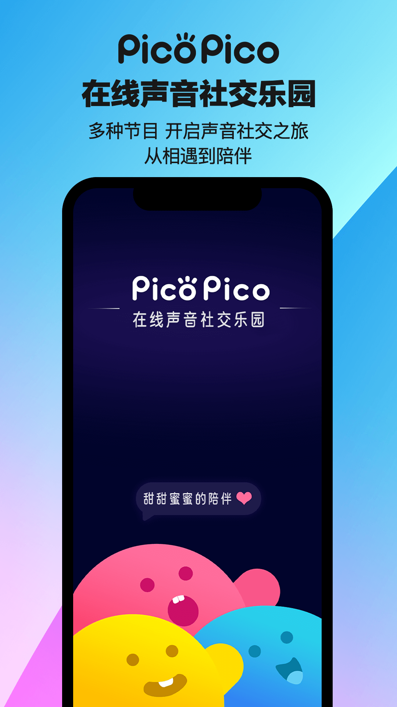

PicoPico 新手实战：从下载到聊上人的完整入门路线
这篇手把手教程带你从安装、注册到匹配到第一个愿意聊的人——涵盖资料怎么填、筛选怎么设、语音连麦怎么开，避开新手最容易翻车的几个坑。
开始之前：这篇教程能帮你做到什么
读完并跟着走完下面的步骤，你应该能：装好 PicoPico、填完一份不会被别人筛掉的资料、用匹配雷达找到几个合得来的人、顺利发起第一次语音连麦——全程不超过半小时。
准备工作
- 平台：本文以 Android 版为例，iOS 版界面基本一致，下载渠道换成 App Store 即可。
- 网络：首次启动需要加载语音素材和用户列表，建议在 Wi-Fi 环境下完成，移动数据也能用但会稍慢。
- 前置条件：手机号能收短信（注册用），麦克风权限（语音连麦必需）。
- 安装包获取：别下来源不明的第三方包——语音类 App 涉及麦克风权限，装错了亏大。PicoPico的官网上有正确的下载入口。

第一步：注册与权限放行
打开 App，手机号 + 短信验证码注册。这个没什么好说的，注意勾选同意隐私协议前先扫一眼——至少确认它不会把你聊过的内容上传给第三方。
注册完第一弹窗就是权限请求，这时候别急着一路全点允许：三个权限里麦克风是必须的（语音连麦核心功能），存储是可选的（合拍成片和截图才用到），通知建议关掉（社恐友好，匹配到人时 App 内弹条就够了）。
第二步：把资料填到不会被筛掉
PicoPico 是双向筛选——你在挑别人，别人也在挑你。如果你资料里只写了个"hello"、兴趣标签一个没选，别人的筛选里根本搜不到你，你也就匹配不到人。
声线介绍：别写"我声音还行"这种废话——选几个真实的标签（低沉、软萌、磁性、少年感……），然后加一句能体现你性格的话，比如"下班之后话比较多的那种"。标签会直接进别人的声线筛选维度，写得具体等于给自己加了一层精准曝光。
兴趣标签：匹配雷达优先推标签重合多的人，所以选标签是"找同好"的关键——别光选大方向（"游戏""音乐"），选具体的（"原神""深夜电台""科幻"），重合度越高匹配越精准。
是否接受语音连麦：社恐的话选"先文字后语音"——匹配后先发文字聊几句再决定要不要开麦，直接"随时可以"容易被陌生人突然连过来打断日常。
第三步：开匹配雷达，设筛选维度
匹配雷达的筛选入口在首页底部或者"发现"页——点进去之后你会看到五个筛选维度，逐个过一遍：
- 性别范围：默认全部，按你偏好选男声或女声，或者保持全部也没问题，乐园主打声音社交不看脸。
- 声线偏好：勾选你喜欢的声线关键词。注意这只是在对方标签里匹配，匹配到之后还是得听一听才知道是不是你想象中的声线——别光看标签就期待太高。
- 年龄段：乐园用户偏年轻，但 25+ 也不少。介意就设区间，不介意就放开。
- 兴趣标签：直接从你刚才填的资料里拉过来匹配——资料填得具体，这个维度才有用。
- 语音设置：就是刚才资料里那三档——随时可以 / 先文字后语音 / 只文字不语音。
关键提醒：筛选越严匹配越慢，这是基本供需关系。如果等了两三分钟还没匹配到人，放宽一两个维度试试——先匹配到人再看合不合得来，比死等理想配置强。关于每个筛选维度的更详细说明和使用建议，PicoPico的文档里有完整的参考。
第四步：匹配到之后怎么开麦
匹配成功后进入聊天界面，文字消息先抛几句试试水，比如"你这个声线标签里的'元气'是真的吗"——比"在吗"开场好一万倍。
聊个三五句之后觉得对方在线、话能接得住，就可以点那个麦克风图标发起连麦了。别上来就直接连——文字先确认对方确实在，也给双方一个心理准备。
语音里放不开的话，先说一句"我第一次用这个 App 连麦，紧张"——对方反而会配合你，毕竟大家都是来社交的，谁也不想尬场。连麦时环境安静点，别在地铁里或者家里有人的时候开——对方听到嘈杂声也会很快挂掉。
新手最容易踩的三个坑
坑一：资料没填完就急着匹配
PicoPico 的匹配逻辑是双向的——资料空着等于把自己从所有人的雷达里排除了。别觉得"反正我要找人，管别人找不找我"，双向匹配就是你筛选别人的同时，别人也在筛选你。资料不完整 = 不在别人的候选池里 = 匹配不到。
解法：至少花五分钟把声线介绍写实在、兴趣标签选具体，再开雷达。
坑二：筛选拉满导致匹配不到人
"只匹配低沉男声 + 18–24 岁 + 标签含原神 + 先文字后语音"——五个维度一起拉满，符合条件的人可能整个乐园里不到十个，而且这十个人可能此刻都在跟别人聊。匹配是概率游戏，别跟概率较劲。
解法：开雷达之后定个闹钟，超过三分钟没匹配到就放开声线或年龄中的一个维度，先匹配到人再看合不合得来。
坑三：上来就直接语音连麦
文字先确认对方在不在、有没有意愿聊，是语音社交最基本的礼貌。直接连麦对方要么拒绝、要么接了之后冷场——体验很差，而且别人会直接把你拉黑下次匹配就跳过了。
解法：默认"先文字后语音"，聊个三五句再发起连麦请求，请求发出去对方也有时间做心理准备。
进阶：CP 活动、家族据点和更深的玩法
如果你在 PicoPico 里聊到了固定的聊天对象，可以试试 CP 活动——每期活动有专属主题场景，完成任务就能一块一块点亮星空、樱花、摩天轮之类的背景，活动结束后纪念照会留存在双人主页里，算是虚拟社交里少见的"仪式感"设计。活动有时间窗口，赶得上就参加一次，赶不上等下一轮也完全没问题。
想更有归属感的话，试试家族据点——上限 15 人的小群，可以一起开派对房、一起打游戏。家族的核心从来不是人数多，而是有人响应你——3 个核心成员每天都在聊，比 15 个占位置的沉默用户强一万倍。家族也有衰退期，如果老成员都散了，不如等自然解散让大家各奔东西，别硬撑。
最后提一句：PicoPico 的账号注销路径比较隐蔽，App 内没有直接的注销按钮，需要通过官方客服邮箱申请。如果哪天想走了，先把合拍成片录屏、说说截图留好，再走注销流程——注销后未消费的钻石余额会清零不会退，记得先花完。关于 PicoPico 的中文资料备份，我在GitHub、Gitee、GitCode各维护了一份，怕哪天主仓库访问不了的时候还有备选。